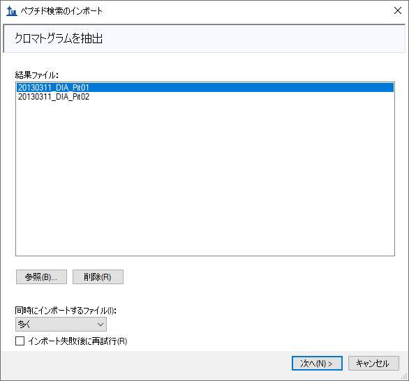
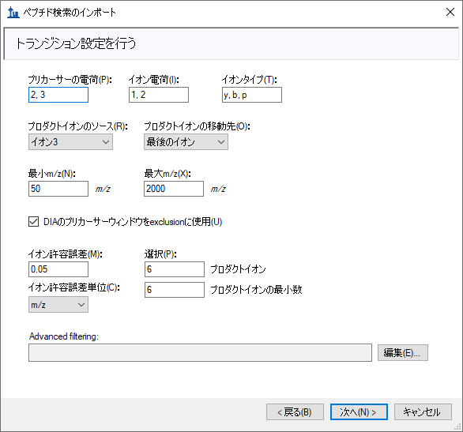
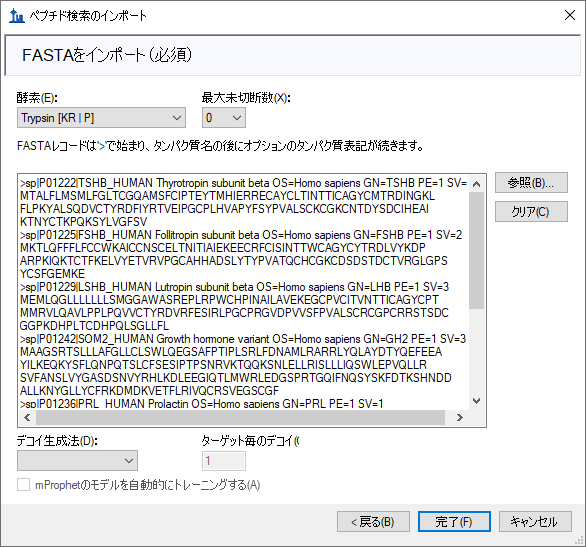
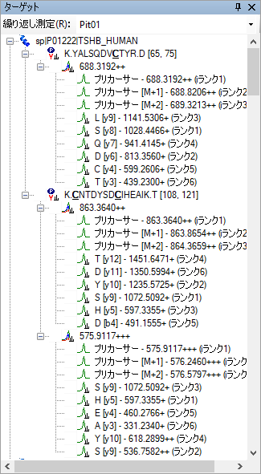
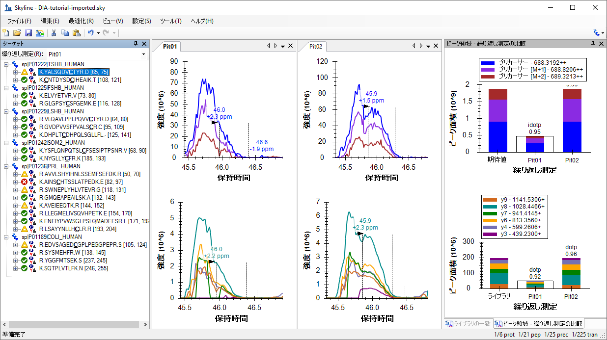
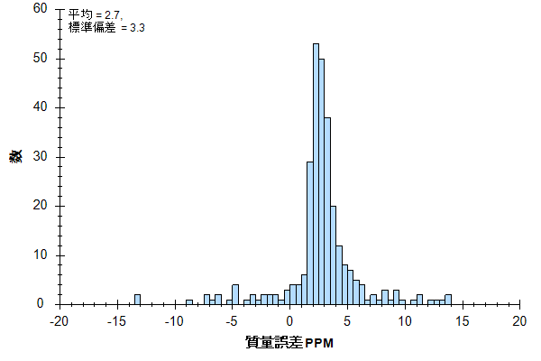
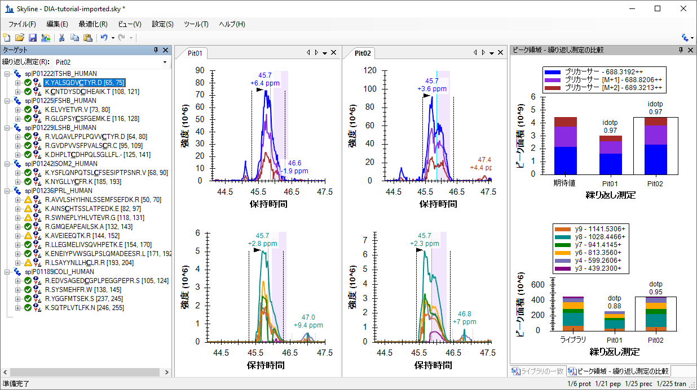
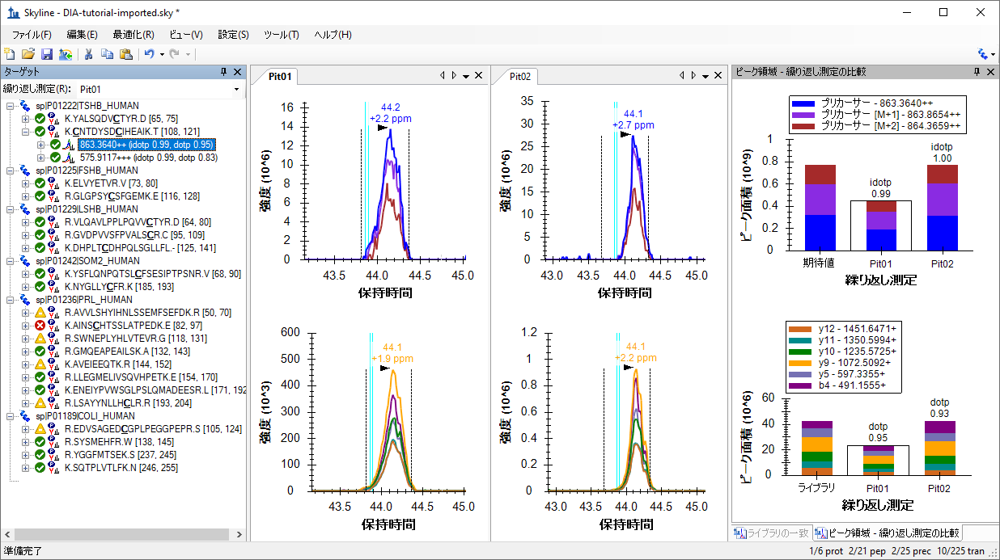
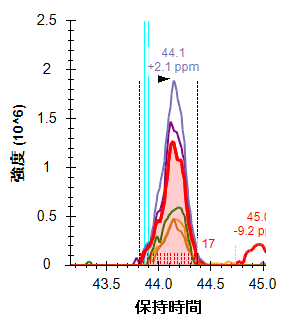
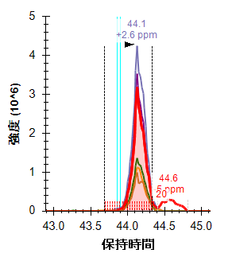

データ非依存性取得 (DIA)1,2 とは大規模ターゲットのプロテオミクス実験を実施するための高度なテクニックです。選択反応モニタリング (SRM) および並列反応モニタリング (PRM) などのターゲット取得アプローチでは、取得スケジューリングなしの場合はごく少量のペプチド、スケジューリングしたマススペクトルランでは数十～数百のペプチドに制限されます。DIAでは、SRMと比べて感度、選択性、および再現性をわずかに犠牲にするだけで、より多数のペプチド（数千またはプロテオーム全体）の測定が可能です。またDIAは、測定するペプチドを事前に指定またはスケジュールする必要がなく、むしろDIAランから取得後に広範囲のプレカーサーm/z内で任意のペプチドのプロダクトイオンクロマトグラムを抽出することが可能であるという利点があります。
DIAデータからのクロマトグラム抽出をサポートする機能が2010年10月に初めてSkylineに実装されて以来、このサポートは定期的に改善され、バージョン21.1のSkylineではDIAデータ解析のための一般的な複数のストラテジーおよびワークフローがサポートされています。また、SkylineではSCIEX、Agilent、Bruker、およびWaters各社のQ-TOFや、Thermo社のQ-Orbitrap装置など、すべてのDIA対応装置がサポートされています。
特定のタイプの装置およびクロマトグラフィー設定では、1つの有効なDIAワークフローで任意の数の初期データ依存性取得 (DDA) ランを開始します。DIAを実行するのと同じ装置でこれらの初期ショットガン測定を実行することは有益です。しかし、同様のフラグメンテーションテクニックとクロマトグラフィーが使用されている場合、装置プラットフォームの間でターゲットアッセイが移動する可能性もあります。これらの初期DDA測定では、試料を分割するか、そうでなければ簡素化して高いプロテオームカバレッジを実現できます。DDAランはペプチド-スペクトルマッチングパイプラインで処理され、その結果のペプチドID、スペクトルおよび保持時間が使用されてスペクトルライブラリおよび保持時間 (iRT) ライブラリ（Skylineの場合）、または（フラグメントイオンのサブセットについて同様の情報を伴う）「アッセイライブラリ」と呼ばれる拡張トランジションリスト（他のツールの場合）が作成されます。これらのフラグメントイオン相対存在量および正規化保持時間 (iRT) のライブラリは、保持時間のアラインメントのために同じ装置と標準ペプチドを用いる後続のDIAランで何度も使用することができます。
DDA検索結果を、このライブラリDIA分析アプローチに適したライブラリに変換するメソッドは数多く存在し（Skylineチュートリアルウェビナー#2の「以前のナレッジワークフロー」で説明され、以降はウェビナー#14、#15、#18およびチュートリアルDIA/SWATHデータの分析でより詳しく文書化）、DIA分析を開始する最も直接的でアクセスしやすい方法は、同じ装置にDIAランとDDAランを組み込み、DDA結果のスペクトルおよび保持時間をDIAランの予測として使用することです。
このチュートリアルでは、Skylineで簡単な散在DDA/DIAアプローチを使用してDIAランを設定、インポート、およびプロセスする方法を学習します。研究でDIAを使用する場合には、上記のウェビナーやチュートリアルで説明されているより強力で複雑な方法に進むことを強くお勧めします。
チュートリアルを始める前に、以下のzipファイルをダウンロードしてください。
https://skyline.ms/tutorials/DIA-20_2.zip
ファイルのサイズが膨大であることにご注意ください（ダウンロードファイルは4.5 GB、解凍後は6.0 GB）。これは一般的に非常に大きなファイルであるDIAランを含んでいるためです（時にSRMランの100～200倍のサイズとなります）。このダウンロードに時間がかかりすぎるか十分なディスク容量がない場合、代わりに以下からより小さなチュートリアルバージョンのファイルをダウンロードできます（ダウンロードファイルは660 MB、解凍後は918 MB）。
https://skyline.ms/tutorials/DIALibrary-20_2.zip
小さなバージョンを選択した場合、マススペクトルの生データファイルが含まれていないため、チュートリアルのいくつかの手順を省略する必要があります。下のテキストが表示されます。どちらのZIPファイルを選択しても、次の手順は以下のようなコンピュータのフォルダにファイルを解凍することです。
C:\Users\damodei\Documents
これにより以下の新しいフォルダが作成されます。
C:\Users\damodei\Documents\DIA-20_2
本チュートリアルを始める前にSkylineを使用していた場合には、Skylineをデフォルト設定に戻すことをお勧めします。デフォルト設定に戻すには、以下の操作を行います。

Skylineのこのインスタンスのドキュメント設定がデフォルトにリセットされました。
本チュートリアルはプロテオミクスに関するものであるため、以下の操作を行うとプロテオミクス用インターフェイスを選択できます。

Skylineは、ウィンドウの右上隅のタンパク質アイコン  で表示される分子モードで動作しています。
で表示される分子モードで動作しています。
DIA分析の場合は、Skylineを強制して抽出された定量トランジションすべてのピーク面積を積分します。このためには、以下のように操作します。
デフォルト設定のみがある新しい空のドキュメントでSkylineが表示されます。SkylineでDIAデータを分析する完全なプロセスを説明するために、 必要な設定、トランジション、スペクトルライブラリ、および保持時間の情報を入力して最初からSkylineドキュメントを構築します。
散在するDDAワークフローを伴うDIAを使用して実験を行う場合、カバーされるプリカーサーm/z範囲にターゲットが含まれているかを確認するなど、関心があるペプチドターゲットをごく一般的に考慮するだけで、最初にDIAおよびDDAランの両方向けに装置を設定できます。DDAメソッドも残されていますが、Skylineはユーザーが「単離スキーム」を定義できるようにすることで、DIAメソッドの設定を支援します（MS/MSのフラグメントに対するプリカーサー単離ウィンドウのパターン）。たとえDIAデータを収集済みであっても、SkylineがユーザーのDIAランをプロセスできるようにするには、使用した単離スキームを定義します。このチュートリアル実験の単離スキームを定義するには、以下の手順に従います。
多くのトリプシンペプチドでは、最初の3つの同位体ピークが最も強くなります。ベース（最も強い）同位体ピークのパーセンテージに基づき強度閾値を使用することもできますが、これらの設定はトリプシンペプチドにとって合理的なデフォルトです。
| 注：このデータはQ-Exactiveで収集され、Orbitrapを使用してMS1およびMS2スキャンが実行されていますが、質量分析計を「Orbitrap」として指定した場合には、セントロイド化されたスペクトルからクロマトグラムを抽出すると、ネイティブプロファイルスペクトルを使用するよりも優れた結果が得られることがわかりました。 |
[ トランジションの設定 ] フォームは以下のようになります。

| 注：[ 保持時間のフィルタ ] オプションは、[ MS/MS IDのスキャンの中で [5] 分前後のスキャンのもののみを使用 ] のままにしておいてください。これによって、Skylineはライブラリ内で見つかったペプチドスペクトル一致から5分以内で取得されたDIAスペクトルからの強度のみを抽出します。単一のペプチドスペクトル一致の場合、総抽出ウィンドウは10分です。所与のペプチドに対して1つ以上のIDがある場合、Skylineは最小ID時間マイナス5分と最大ID時間プラス5分の範囲で取得されたスペクトルから抽出します。（後で説明しますが、すべてのID保持時間は構築した非冗長ライブラリ内にも保存されます。) 2つ目のオプションである [ 予測RTの中で [5] 分前後のスキャンのもののみを使用 ] では、RT予測（たとえばSSRCalc、または一般的にはiRTライブラリ）を使用して抽出時間範囲を決定します。本チュートリアルではRT予測は使用しませんが、これは前記の他のチュートリアルやウェビナー、そしてアッセイのインポートのヒント（Skylineのウェブサイトの [ ヒント ] > [ 他の定量ツールでの作業 ]）でも説明しています。 |
これで、基本的なフルスキャン装置パラメータの設定が完了しました。次に、DIA単離スキーム、またはDIAを実行する際に装置がサイクルするプリカーサーm/z範囲のパターンを指定します。例えば、このチュートリアルのデータセットでは、Q Exactive装置は、500～520m/zからプリカーサー m/z 範囲を開始し、次に520～540 m/z、それから880～900 m/zまで増加し（あるいは500から900 m/zまで連続する20個の20 m/z ウィンドウ）、その後このサイクルを繰り返します。Skylineでこの単離スキームを指定するには、以下の手順に従います。
次のような [ 単離スキームを編集 ] フォームが表示されます。

ここで、単離ウィンドウを指定できるグリッドが有効になります。手動でグリッドにウィンドウ境界を入力することもできますが、この場合、ウィンドウ境界のサイクルは規則性が高いため（20 m/zの増分で500～900 m/z）となります。次のように素早く境界を指定する方法があります。
これでウィンドウ境界が1価および2価のペプチドプリカーサーが発生するところから約0.25 m/zのところに最適化されます。3価および4価のプリカーサーの中には、これらの境界に近いものもある可能性がありますが、20 m/zのウィンドウであればこのようなことが頻繁に起きる可能性は低く、Q1単離が境界で合理的に効率的であればSWATH2に関するオリジナルの論文で提案されているようなウィンドウのマージンをオーバーラップさせる（各側に0.5 m/z）必要が少なくなります3。

図：観測されるペプチドの共通ライブラリで見られる1価から4価のペプチドプリカーサーから計算したヒストグラム。一番高いピークは1価から4価のプリカーサーを表し、2番目に高いピークは2価と4価のプリカーサー、そしてさらに小さなピークが3価のみのプリカーサーを表し、4価のみのプリカーサーは3価のみのピークの小さな肩程度にしか現れません。「最適」境界と記されている縦の線は、この範囲での最適化ウィンドウ配置境界を示しています。（Brian Searleのご厚意により提供）

Gillet, et al. MCP 2012よりの補足図S1：c) は定義された範囲の完璧な長方形単離を示し、d) は定義された四重極単離範囲のエッジでの0.5 m/zにわたるあまり理想的ではない信号ドロップオフを示し、e) とf) はマージンがオーバーラップしない場合とする場合とで完全な同位体分布がどのように分割されるかを示しています。同位体分布全体はターゲットとなっているモノアイソトピックm/zのみを通じて単離されているため、モノアイソトピックプリカーサーm/zが単離ウィンドウのエッジに非常に近いように見える場合でも強いフラグメントイオン信号が得られることを覚えておくことが重要です。
作業中のDIAデータが既に取得済みである場合、現段階で定義された単離スキームが取得に使用される装置の設定を反映することが重要です。この場合、通常は最も安全な状態であるため、[ インポート ] ボタンをクリックしてSkylineを既存のデータファイルの1つにポイントします。
[ 単離スキームを計算 ] フォームは以下のようになります。

Skylineは、500～900 m/zの範囲を20 m/z間隔でカバーするために必要な20個のウィンドウの境界を自動入力します。
[ 単離スキームを編集 ] フォームは以下のようになります。

また、Skylineでは、入力した内容が正しいか確認するために、プリカーサーm/z範囲の単離を経時的に視覚化できます。
Y軸をサイクル/時間、X軸をm/zにした、経時的な単離ウィンドウのサイクルのグラフが表示されるはずです。

DIAでは、装置は測定するために特定のトランジションセット (SRM) やプリカーサー (PRM) を必要としません。そのため、空のターゲットであるにもかかわらずユーザーのドキュメントはここでDIAランを設定するために必要な情報すべてを保持しています。DIA単離スキームは以下のようにして装置にエクスポートできます。
[ 単離リストをエクスポート ] フォームが表示され、単離リストのエクスポート形式が選択できます。
フォームは以下のようになります。

保存したファイルを開きます。これは以下のようになります。

この単離スキームは、（このチュートリアルのデータが取得された）Thermo Q Exactive用にフォーマットされていますが、Skylineでは他の複数の装置タイプにエクスポートすることも可能です。
これが実際のDIA実験であるならば、この単離リストファイルを使用してユーザーの装置でDIA取得を実行することが妥当といえます。代わりに、装置ソフトウェアで単に単離スキームを手動で指定することもできます。データ取得の他のメソッドパラメータ（MS/MS単離幅および分解能など）は、メソッドファイルに手動で設定する必要があります。
本チュートリアルでは、実際に実験のすべてのDDAおよびDIAランが完了していますので、そのように仮定します。Peptide ProphetおよびTrans Proteomic Pipeline (TPP) を実行した場合は、X! Tandemのような検索エンジンを使用してDDAランからのMS/MSスペクトルをペプチドに一致させてデータ分析ワークフローを開始すると、一連の.xtan.xmlファイルまたは .pep.xmlファイルが生成されます。本チュートリアルでは、DIA-20_2.zip（DIALibrary-20_2.zipではありません）をダウンロードした場合はDDAランの単一の.pep.xmlファイルと、オリジナルの生DDAデータファイルの.mzXMLファイル変換 (804 MB) が提供されます。Skylineドキュメントを関連DIAラン分析用に設定する最初のステップは、この検索結果をSkylineにインポートし、MS/MSスペクトルと取得時の保持時間を含むスペクトルライブラリを作成することです。DDA検索結果をインポートするには、以下の操作を実行します。
コンピュータディスクドライブのどこで分析を実施するのかがわかるよう、現在のドキュメントを保存する必要があるというメッセージが表示されます。
以下のようなペプチド検索のインポートウィザードが表示されます。

このデータセットでは、[ カットオフスコア ] フィールドが「0.95」に設定されており、PeptideProphetスコアが0.95以上のペプチドスペクトル一致が含まれることを意味します。これはDDAデータがTPPで処理されたためです（SEQUESTによるペプチドスペクトル一致の後）。q値またはゼロが最高で1が最低である期待スコアを使用する他のスペクトル一致パイプラインの場合は、1 – スコアのカットオフスコアを使用します。したがって、0.95は≤0.05となります。再利用可能なライブラリの場合は、0.99などのもっと厳密なカットオフを使用します（≤0.01またはq値の偽発見率1%）。
このファイルには、1回のDDAランからのペプチドスペクトル一致結果が含まれています。実際の実験では、質量分析計で実際にDDA取得を行い、それから検索エンジンで出力ファイルを実行し、このようなファイルを1つ以上生成します（通常はTPPが生成するpepXMLに対して1つ）。ここでは、ファイルが提供されています。元のDDAランデータファイル（mzXMLに変換）であるinteract-20130311_DDA_Pit01.mzXMLも同じフォルダにありますので注意してください。このファイルをクロマトグラム抽出用にインポートする必要はありませんが、ライブラリビルダーが.pep.xmlファイルには存在しない、そのライブラリのMS/MSスペクトルを検出するためにこのファイルが存在している必要があります。Mascot DATファイル、Proteome Discoverer pdResultファイル、X! TandemネイティブXMLファイルなどのその他のスペクトル一致パイプラインの出力では、1つの出力ファイルに必要な情報すべてが含まれています。Skylineウェブサイトで対応するツールおよびファイル形式の全リストをご覧ください。
ウィザードの [ スペクトルライブラリ ] ページは以下のようになります。

Skylineがスペクトルライブラリの構築を終了すると、DDAランからのMS/MSスペクトルに一致するすべてのペプチドとその保持時間をSkylineドキュメントに含められるようになります。まずは、[ クロマトグラムを抽出 ] ページが表示されます。このページでは、クロマトグラムの抽出、ピーク検出、ピーク面積計算に使用するDIAデータファイルがどこにあるかを指定できます。
[ 結果ファイルを参照 ] フォームは以下のようになります。

ペプチド検索のインポートフォームは以下のようになります。

Skylineは、Skylineインターフェイスで表示される繰り返し測定名を短くし、一般的に作業しやすくなるよう、共通プリフィックスである「20130311_DIA_Pit0」を削除するかどうかをユーザーに尋ねます。ただし、この場合、名前は「1」や「2」まで短縮されます。
[ 結果をインポート ] フォームは以下のようになります。

[ 修飾を追加 ] ページが表示され、スペクトルライブラリには、Unimod修飾である「酸化(M)」に一致したM[+16]があるペプチドシークエンスが含まれていると表示されます。この種の修飾をターゲットリストに許可するには修飾名の横にあるチェックボックスをオンにするだけですが、このチュートリアルでは行いません。
以下のような [ トランジション設定を行う ] ページに移動します。

このチュートリアルのデフォルト設定を使用することもできますが、今後の自分のデータに合った選択肢を考えるのもいいでしょう。
次のページに移動するには、以下の操作を行います。
[ フルスキャン設定を行う ] ページに移動します。このページには、先ほど行った設定と同じものが表示されますが、以下のようになっていることを確認してください。
[ FASTAをインポート ] ページに移動します。このページでは、ペプチドへの消化に使用したプロテアーゼ酵素と共にターゲットにしたいタンパク質をFASTA形式で指定するように要求されます。この酵素は、最大未切断数0で、デフォルトのTrypsinのままにしておいてかまいません。
フォームは以下のようになります。

今FASTAテキストに6個のターゲットタンパク質だけを含めたこの簡単な導入では、デコイやmProphetアルゴリズムで生成された動的ピーク選択モデルは使用しません。これらのオプションについての詳細は、DIA/SWATHデータの分析のチュートリアルを参照してください。
Skylineがタンパク質を6個、ペプチドを21個追加するというフォームを表示します。これによって25個のプリカーサーと225個のトランジションが対象となります。どのタンパク質でも、スペクトルライブラリに存在していたペプチドのみがこのリストに含まれます。
タンパク質とペプチドが [ ターゲット ] ペインに表示され、選択した生データファイルからクロマトグラム抽出が自動的に開始します。以下に進む前に、進行状況ウィンドウを移動させたり閉じたりできます。
これによってSkylineが含めたトランジションセットすべてが表示されます。すべてのペプチドには500と900 m/zの間にある対象プリカーサーすべてが含まれ、すべてのプリカーサーには6個のbトランジションとyトランジションの他、3個のプリカーサーイオン (M、M+1、M+2) が含まれていることに注意してください。また、すべてのプリカーサーには該当するライブラリスペクトルがあることにも注意してください。各トランジションのテキストは、「rank」または「irank」番号で終わっています。これは、フラグメントイオンのライブラリスペクトルまたはプリカーサー同位体イオンの同位体分布内での強度ランキングを示します。
[ ターゲット ] ビューは以下のようになります。

DIAでは、装置が500-900 m/zの範囲にある考えられるすべてのプリカーサーとプロダクトの組み合わせを網羅しているため、あらゆるセットのプロダクトイオンを抽出できます（少なくともMS/MSスペクトルの測定範囲内にあるもの）。しかしながら、実際には考えられるすべてのプロダクトイオンを抽出する必要はないことが多く、事実、ノイズが多く、必要とするペプチドの信号が非常に低いクロマトグラムを追加してペプチドの検出を妨げる場合があります。最も強度が高い6個のトランジション(y1、y2、b1、b2を含まない)を必要とするように設定するプロダクトイオンの選択規則は、プロテオミクスコミュニティにおいて広く受け入れられるようになりました。
大規模なDIA実験では、高度なピーク選択（ペプチド検出）モデルをトレーニングするデコイペプチド6があると有用な場合があります。これによってSkyline自動ピーク選択が向上し、Skylineが検出確率スコア（q値）を生成できるようになります。デコイペプチドは厳密にはDIAワークフローには必要ではなく、カスタムピークスコアメソッドを適用する場合にのみ必要となります。多くの場合、Skylineデフォルトピーク選択が十分にうまく機能するので、カスタムピークスコアは必要ありません。カスタムピークスコアを使用する場合でも、デコイに代わるものはあります（高度なピーク選択モデルのチュートリアルを参照）。本チュートリアルでは、ドキュメントにデコイを追加しません。
DIAランがすべてインポートされたら、結果を見ることができます。
Skylineウィンドウは以下のようになります。

これはここから始めるのに適した例ではありません。実際よりもずっと悪いように見えてしまいます。人間の観察者として、ユーザーはピーク積分境界に調整が必要なことがすぐにわかります。これはおそらくSkylineがフラグメントのクロマトグラムに基づいて積分境界を選択するためだと思われます。よく見てみると、信号がX軸まで落ちているところがあるのがわかります。セントロイド化されたデータでは、これは通常、先ほど+/- 20 ppmに設定した抽出ウィンドウ外へのピークのシフトによるものです。
このような信号ドロップアウトのエビデンスが見られる場合は、抽出設定の幅が狭すぎるのではないかと考えて当然です。Skylineでそれを確認する最良の方法は、以下の操作を行うことです。
もっと多くのターゲットがあるドキュメントでは、各ペプチドプリカーサーに対して強度が最も高いトランジションのみを使用して質量誤差分布を把握します。この2番目のステップは不要かも知れませんが、この場合は分布がわかりやすくなり、以下のようになります。

経験則として、以下を確認します。
この規則によって、インポートされるファイルに入っている質量スペクトルにとって、15 ppmと言う選択はおそらく悪くないでしょう。
平均値 (2.9) と標準偏差 (2.1) により、9.2 ppmが十分であることがわかります。抽出されたクロマトグラムで見られる信号ドロップアウトは、20 ppmの質量許容誤差が狭すぎるためではないと考えるのにはこれで十分です。この異常を生じている原因については、後ほどまた説明します。
ここでは、以下の操作を行います。
この最後のステップで、スペクトルライブラリのペプチドスペクトル一致の保持時間のところで、クロマトグラムグラフに青緑色の縦線が追加されます。これはクロマトグラムの+/- 5分を抽出することにしたおよその回数です。DIAおよびDDAランがよく似たクロマトグラフィーを示す場合は、選択されたピークの近くにこのような線が表示されるはずです。
これでSkylineウィンドウは以下のようになります。

ここでは以下に注意します。
今度は次のペプチドに進みます。
荷電状態が複数ある場合には、トランジション分割表示が電荷状態で分割され、イオンタイプでは分割されないことがわかります。また、MS1スキャンから抽出されたプリカーサーイオン強度は、通常MS/MSスキャンから抽出されたプロダクトイオン強度を小さく見せることもわかります。
| 注：明確にするため、凡例は上記画像に合わせて復元され、プロットはサイズ変更されています。 |
これで2つ目のペプチドの2価のプリカーサーが選択され、Skylineウィンドウは以下のようになります。

最後のペプチド、質量誤差、idotp、dotpに関して導入されたすべての測定は、このプリカーサーでは向上しているように見えます。特に「Pit02」内のピークに対しては、別の積分境界を選択したいと思うかも知れません。別の積分境界を選択し、その後Skylineの [ 元に戻す/やり直し] ボタンを使用することで、それがピーク面積をあまり変えないことを確認できます。最初のペプチドのように積分境界がピークの大部分を逃していない限り、通常はこのようなわずかな違いは許容する方がいいでしょう。
これは約7倍強度の高いプリカーサーです。また、かなりいいように見えますが、y5クロマトグラムに干渉があることに気付かれたかもしれません。これをもう少し明確にするために、以下の操作を行います。
クロマトグラムは以下のようになります。
|  |  |
y5クロマトグラムが赤で強調表示され、積分境界間にある点がX軸の上にある赤の点線で強調表示されています。その右側には、カウント（17と20）が注記されています。また、右側にはPit01で45分、Pit02で44.6分のところに2つ目のピークがあります。どちらも44.1分のところにあるピークにはあまり寄与していないように見えますが、大量の測定を予定していた厳密な定量分析では、やはりこのトランジションを削除し、対象としているピークとおそらくもっと高強度で共溶出しないようにすることも可能です。
次のペプチドに進みます。
一見すると、このペプチドは共溶出、積分境界、質量誤差、ドット積値と言う面では非常に優れているように見えます。もっとよく見てみると、プリカーサークロマトグラムの右端がフラグメントクロマトグラムよりも低下するのが速いことに気付かれるかもしれません。これもやはり信号ドロップアウトであり、以前のものと原因は同じです。これについては後でまた説明します。
4つ目のペプチドは3つ目と比べてあまり魅力はありませんが、53.5分辺りで常にピークを積分しているように見えます。
抽出されたクロマトグラム全範囲を表示するには、以下の操作を行います。
これによってSkylineがDDA ID時間の周囲+/-5分枠でクロマトグラフを抽出しただけであることが示されます。IDは53.5分近辺で発生していますので、Skylineは48.5～58.5分を抽出します。
DIAでは、プリカーサー単離ウィンドウが非常に幅広い（例：10～25 m/z）ため、多数の干渉が考えられます。しかしながら、Skylineによるピーク選択の自動化は、非常に多数の干渉がある場合でも、多くの場合正しいピークを選択できます。この場合、より多くのピークがあることがわかりますが、Skylineはそれでも利用可能な最良のピークを選んでいます。以下の操作を行ってピークの拡大縮小を復元したら、これはこのままにしておいてそのまま下に進みます。
次の5個のプリカーサーは、ペプチドK.NYGLLYCFR.K [184, 192]までは優れたものに見えます。このペプチドのピークは、幅が1分にわたり、あまりガウス形状とは言えません。Skylineは、両ピークに誤って正しい積分境界を与えているため、ピークが2/3しかカバーされていません。これを修正するには、以下の操作を行います。
このペプチドのプロットは、以下のようになります。
青緑色のIDライン、idotp 0.99、そしてdotp 096の組み合わせにより、このピークの割り当てにはかなりの信頼性があります。
これらのランにおけるクロマトグラフィーにより、このリストにある後半のペプチドにはこの種の修正を複数回繰り返す必要があります。複数の公開されたソフトウェア比較論文に基づくと、Skylineはピーク積分において他のツールと比較しても劣るものではありません。難しいピーク形状では、他のツールにも同じような問題があります。
次の2つのペプチドであるAVVLSHYIHNLSSEMFSEFDKとAINSCHTSSLATPEDKには、DDAからペプチドが同定された回数に関して説得力のある信号が欠けています。Shift-F11を使用して拡大したり、マウススクロールホイールを使ってマウスを中心とした拡大縮小をしたり、ctrl-click-and-dragでパンしたりすることができますが、どちらのペプチドに対しても、クロマトグラム中には何も見つからないでしょう。これらは削除するか、または単にペプチドSWNEPLYHLVTEVRに進みます。
このペプチドには2つのプリカーサーがあります。871.9467にある2価と、581.6335にある3価です。
どちらのプリカーサーにも、うまく共溶出しているフラグメントイオンのクロマトグラムがあり、明白な干渉はありません。また、どちらもMS1クロマトグラムの左側で明白な干渉を示しています。
ピーク面積プロットを見ると、強度の規模（イオン個数/秒）が把握できます。ここでプリカーサー (MS1) は総数100万近く、プロダクト (MS/MS) は総数2万から2万5千または40から50倍の差です。先ほど見たように、MS1信号はMS/MSを小さく見せますが、同時にノイズや干渉も起こしやすくなっています。
| 注：以下のフルスキャンビューの使用はすべて、フルチュートリアルデータセットをダウンロードした場合にのみうまくいきます。そうでなければ、Skylineは生データファイルがないというメッセージを表示します。 |
このクロマトグラムが抽出されたMS1スキャンで何が起きたのかをよりよく把握するため、以下の操作を行います。
Skylineは、プリカーサークロマトグラムの点が抽出された幅広いMS1スキャンを表示するフルスキャンビューを表示します。虫眼鏡のボタンをクリックし、ビューの右上角にあるプラス ( )
をクリックするとMS1スキャン全体が見えるようになります。代わりに、以下の操作を行います。
)
をクリックするとMS1スキャン全体が見えるようになります。代わりに、以下の操作を行います。
フルスキャングラフは以下のようになります。
セントロイドモードピークの強度は棒のようになります。クロマトグラフで点を形成していた強度は、クロマトグラムの色で強調表示され、抽出範囲は影付き領域として表示されます。抽出されていなかったM+3およびM+4ピークが影付きピークの右側にあるのが見えます。また、干渉しているピークの頂点を形成していたスペクトルが、このプリカーサーの積分されたピークの左側に表示されています。ターゲットペプチドよりも1ダルトン重い2価のプリカーサーの同位体分布全体が見られます。モノアイソトピックピークは、ターゲットのM+1に非常に近くなっています。
70.56分には、ターゲットモノアイソトピックフィルタ範囲にあるピークを含む最初のMS1スペクトルが青色で強調表示されます。70.67分までは、モノアイソトピックピークが最も高い最初のMS1スペクトルは見えません。
プロダクトイオンMS/MSスキャンに同様の分析を実施するには、以下の操作を行います。
フルスキャンビュー内のグラフが以下のように表示されます。
今クリックしたクロマトグラムの点となったMS/MSピークが水色で強調表示され、y10と注釈が付くことがわかります。同位体ピークは1 m/zずつ離れていることからも、これらが1価のイオンからによるものであるという確信が持てます。
以下のようなスペクトルプロットが表示されます。
ここでも、一連の中で一番高いピークが強調表示されて注釈が付きます。そのうち、以下のピークは0.5 m/zずつ離れており、2価のイオンの同位体分布であることを示します。これにより、プロダクトイオンクロマトグラムで抽出された信号がターゲットとしているものと一致するという、より確かな確信が持てます。
上記で確認したMS1スペクトルでは、ニュートラル質量が1ダルトン異なるにも関わらず、干渉イオンと対象としているターゲットイオンの質量電荷比はかなり類似しています。あまり類似していないイオンm/z値でも十分に近く、質量分析計では単一の未解決プロファイルピークとなることがあります。この場合、この単一のピークがターゲットm/z値よりも20 ppm以上高くてもm/z値にセントロイド化されることがあります。本チュートリアルで既に見てきた信号ドロップアウトの最も一般的な原因はこれです。
以下の操作を行い、フルスキャンビューを使用してこの様子を見ます。
時間が経つほど、M-1（モノアイソトピックプリカーサーの左）にあるピークが強くなっていくのがわかります。
41.67分には、最大のピークとなります。
41.68分で、抽出されたピークのm/zが左にシフトするのがわかります。

そして41.70分では、+/- 20 ppmの抽出範囲を超えてシフトしています。
DIAのセントロイド化されたMS/MSスペクトルからの抽出は、特にThermo Orbitrap装置では、幅広い統計検定でより信頼性があることが実証されていますが、データを見るときには、これがやはり理解に有用な概念です。この設定での干渉は、通常は信号が増加するであろうと期待されるような状況で総信号を減少させることがあります。
本チュートリアルでは、DIA装置メソッドの生成またはこのチュートリアル同様に単なるデータ分析に使用するDIA取得スキームを定義しました。DDA検索結果からスペクトルライブラリを構築し、測定されたRTに基づいてライブラリ内で保持時間制限を設定し、対象とするタンパク質とDDAランからの一致するスペクトルに基づいて測定するトランジションセットを定義し、DIAランをインポートし、その結果生じるデータ品質を分析しました。最後に、すべてのSkylineドキュメント同様、対象とするペプチドのピーク面積と統計情報が生成できます。本チュートリアルでは、さらに高度な調査のためにその他に複数のチュートリアル（ターゲットメソッドの編集、既存の定量的実験、iRT保持時間の予測、高度なピーク選択モデル、アッセイライブラリのインポートおよびパノラマクロマトグラムライブラリ）に言及しています。
本ワークフローでは、DIAランの前、後、またはその間に取得したDDAランがあれば、SkylineであらゆるDIAデータセットを分析できるようになります。これはDIAデータ分析を始める簡単な方法の1つですが、DIA/SWATHデータの分析チュートリアルで勉強を続けることが強く奨励されます。そこでは、較正されたiRT値を使用してスペクトルライブラリを構築し、クロマトグラムピークのスコアと選択にこの正規化された保持時間とmProphet統計モデルを使用します。また、Skylineでのグループ比較も使用して、調整されたp値で各ペプチドまたはタンパク質の条件による倍率変化を推定します。
1. Venable, J. D., Dong, M.-Q., Wohlschlegel, J., Dillin, A. & Yates, J. R. Automated approach for quantitative analysis of complex peptide mixtures from tandem mass spectra. Nat. Methods 1, 39–45 (2004).
2. Gillet, L. C. et al. Targeted data extraction of the MS/MS spectra generated by data-independent acquisition: a new concept for consistent and accurate proteome analysis. Mol. Cell. Proteomics MCP 11, O111.016717 (2012).
3. Egertson, J. D. et al. Multiplexed MS/MS for improved data-independent acquisition. Nat. Methods 10, 744–746 (2013).
4. Krokhin, O. V. et al. An improved model for prediction of retention times of tryptic peptides in ion pair reversed-phase HPLC: its application to protein peptide mapping by off-line HPLC-MALDI MS. Mol. Cell. Proteomics MCP 3, 908–919 (2004).
5. Escher, C. et al. Using iRT, a normalized retention time for more targeted measurement of peptides. Proteomics Accept. (2012).
6. Reiter, L. et al. mProphet: automated data processing and statistical validation for large-scale SRM experiments. Nat. Methods 8, 430–435 (2011).